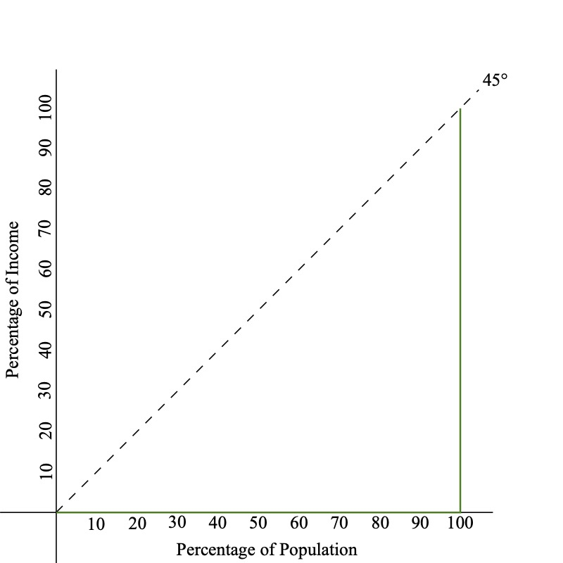
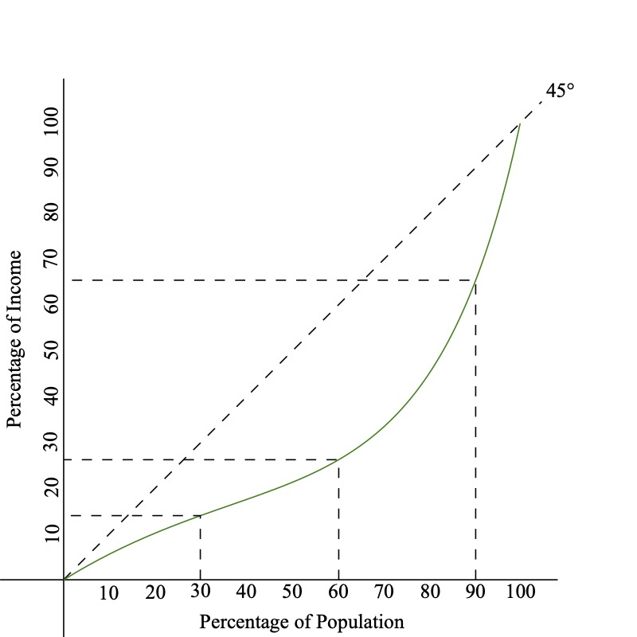

Poverty and Inequity
EC 390 - Development Economics
2025
Measuring Inequality
What is Poverty and Inequality
We have previously talked about Absolute Poverty previously
We can define it again as:
- Not being able to meet basic daily needs for food, shelter, clothing, etc.
Aside from poverty, we are interested in how income is distributed across individuals
Income Inequality
When thinking of comparing nations, we have measured incomes on national averages which has its own flaws
But how do we measure how income is distributed across individuals?
Income Inequality happens when income is unequal across households
- This creates an income distribution which we can later see where wealth is concentrated
Perfect wealth equality would be where everyone has an equal share of wealth
Income Inequality
Is income inequality necessarily bad?
- It depends
- Think of the theoretical outcomes that produce inequalities in societies
- Economists believe that some level of inequality will naturally exist
- Different skills will affect how productive someone may be
- In the most strict sense of economics, individual productions affect how much someone is paid
- Some inequality may be beneficial, it incetivizes individuals to increase their productivity/skill
- However, if inequality interferes with individual’s ability to perform basic functions, then we have a problem

Income Inequality
How should we measure inequality? Not easy to answer
There are 4 criteria to consider
Anonymity Priniciple:
Scale Independence Principle:
Population Indipendence Principle:
Transfer Principle:
Income Inequality
There are 4 criteria to consider
Anonymity Priniciple:: Measure of inequality should not depend on who has the higher income
Scale Independence Principle:
Population Indipendence Principle:
Transfer Principle:
Income Inequality
There are 4 criteria to consider
Anonymity Priniciple:
Scale Independence Principle: Measure of inequality should not depend on the size of the economy
Population Indipendence Principle:
Transfer Principle:
Income Inequality
There are 4 criteria to consider
Anonymity Priniciple:
Scale Independence Principle:
Population Indipendence Principle: Measure of inequality should not be based on the number of income recipients
Transfer Principle:
Income Inequality
There are 4 criteria to consider
Anonymity Priniciple:
Scale Independence Principle:
Population Indipendence Principle:
Transfer Principle: Holding all other incomes constant, if we transfer income from rich individuals to poor individuals, we should have more equal income distribution
Income Inequality Visualized
Let there be an economy with 10 people
- Incomes are: 10, 10, 10, 10, 10, 10, 10, 10, 10, 10
- Average Income: 10
- What percent of total income does the first person hold?
- \(10\%\)
- What percent of total income do the first 5 people hold?
- \(50\%\)
Perfect Income Equality

Income Inequality Visualized
Let’s change it up. There are still 10 people in the economy
- Incomes are: 5, 5, 5, 10, 10, 10, 10, 10, 10, 25
- Average Income: 10
- What percent of total income does the first person hold?
- \(5/100 \Rightarrow 5\%\)
- What percent of total income do the first 5 people hold?
- \(\dfrac{5 + 5 + 5 + 10 + 10}{100} \Rightarrow 35\%\)
- What percent of total income does the wealthiest person hold?
- \(25\%\)
Income Inequality

Lorenz Curves
Lorenz Curves are functions that show what percentage of wealth the bottom x% control
- Perfect equality is represented by a 45 degree line
- The Bottom 10% have 10% of the wealth
- The Bottom 20% have 20% of the wealth
- And so on
- Everyone has the same amount of wealth
Lorenz Curves - Perfect Equality

Lorenz Curves
On the other extreme, consider perfect inequality
- The Bottom 10% have 0% of the wealth
- The Bottom 20% have 0% of the wealth
- And so on
- Until we get to the last person, who has all of the nation’s wealth
Lorenz Curves - Perfect Inequality
Lorenz Curves
In reality, countries fall somewhere between the two extremes
- The extent of inequality can be (somewhat) represented by the area between the Lorenz Curve and the 45 degree line
Lorenz Curve - Realistic Example
Gini Coefficient
Graphs are a good visual representation of the wealth distribution
- Quantifying this would be very useful
The Gini Coefficient measures how far away a country is from perfect equality
We define it as:
\[ \text{GINI} = \dfrac{A}{A + B} \]
- The Gini Coefficient can range from 0 to 1
- A coefficient of 0 indicates perfect equality
- A coefficient of 1 indicates perfect inequality
Gini Coefficient Graph

\[ \text{GINI} = \dfrac{A}{A + B} \]
Gini Coefficient
It is a good metric, but does not provide all information about the distribution of wealth
Take for example these two diffferent countries:


Measuring Absolute Poverty
It is difficult to measure the (exact) Gini Coefficient we need to know incomes for everyone in a country
- The data, isn’t usually available for developing countries, so we need to use some coarser measure
- How can we get a good idea of the intensity of poverty in a particular region?
- We can use the Headcount Ratio Index, which is the percentage of people living below the poverty line
Headcount Ratio Index
Say that the absolute poverty line is $2
- Country A has 3 Million out of 10 Million at or below this poverty line
- The Headcount Ratio is \(H = 3/10 = 30\%\)
- But the Headcount Ratio Index tells us nothing about how the poor are distrubted beneath the poverty line
- Everyone living at $1.50 per day is much different than everyone living at $0.10 per day
Total Poverty Gap
We can instead look at the Total Poverty Gap (TPG)
- This measures the total amount of money needed to get everyone up to the absolute poverty line
\[ TPG = \sum_{i=1}^{H} (Y_{p} - Y_{i}) \]
- Where \(H\) is the total number of people below the poverty line
- \(Y_{p}\) is the poverty line (eg. $2 per day)
- \(Y_{i}\) is the income of the \(i^{th}\) person under the poverty line
Other Measures of Poverty Gaps
We can also have the Average Porvery Gap
\[ APG = \dfrac{TPG}{\text{Country Population}} \]
- This measures the amount each person would need to be given to everyone them out of poverty
And Average Income Shortfall
\[ AIS = \dfrac{TPG}{\text{# of Poor}} \]
- Measures the average amount poor people are below the poverty line
Other Measures of Poverty Gaps
Normalized Income Shortfall
\[ NIS = \dfrac{AIS}{\text{Poverty Line}} \]
- Measures the Average Income Shortfall as a percentage of the poverty line
Let’s look at some examples
Poverty Measure Examples
Let’s return to our tiny country of 10 people
- The poverty line is $1,000 per year
- There are three people living at or below the poverty line
- Person A makes $500
- Person B makes $800
- Person C makes $950
Find all of TPG, APG, AIS, NIS
\[ TPG = \sum_{i=1}^{H} (Y_{p} - Y_{i}) \;\; ; \;\; APG = \dfrac{TPG}{\text{Country Population}} \\ AIS = \dfrac{TPG}{\text{# of Poor}} \;\; ; \;\; NIS = \dfrac{AIS}{\text{Poverty Line}} \]
Poverty Measure Examples
Total Poverty Gap
\[\begin{align*} TPG &= (100 - 500) + (1000 - 800) + (1000 - 950) \\ &= 500 + 200 + 50 = 750 \end{align*}\]
Average Poverty Gap
\[ APG = \dfrac{TPG}{10} = \dfrac{750}{10} = 75 \]
Average Income Shortfall
\[ AIS = \dfrac{TPG}{\text{# of Poor}} = \dfrac{750}{3} = 250 \]
Normalized Income Shortfall
\[ NIS = \dfrac{AIS}{\text{Poverty Line}} = \dfrac{250}{1000} = 25\% \]
Why Does Inequality Matter?
Why Do Inequality and Poverty Matter?
We have explored the relationship between poverty/inequality
- It’s clear that societies are worse off when more people are living in absolute poverty
- It is less clear exactly why inequality is bad for a country
Why Does Inequality Matter?
There are three main proposals for why extreme inequality is bad
1. High inequality leads to Inefficiencies
2. High inequality leads to Unequal Distribution of Power
3. Ethically/Philosophically Unfair
Why Extreme Inequality is Bad
1. High inequality leads to Inefficiencies
- Less people can qualify for a loan, and therefore are limited in their ability to invest in education, business, etc.
- Overall sayings rare is low because the poor usually do not save as much
- Inefficient allocation of assets
- Overemphasis on higher education instead of universal primary education
- Unequal distribution of farm land (most efficient is medium-size farm)
Why Extreme Inequality is Bad
2. High inequality leads to Unequal Distribution of Power
- Increased political power of the rich
- Policies sway in favor of the rich, at the expense of the poor
- Often leads to rent-seeking behavior, which reduces resources that could improve overall growth of the country
- Rich are less likely to improve institutions because they would not like to relinquish power
- Poor are more likely to support populist policies that can be self-defeating
- Often leads to higher crime
- With high inequality, the focus of politics often tends to be on supporting or resisting the redistribution of the existing economic pie rather than on policies that increase its size
Why Extreme Inequality is Bad
3. Ethically/Philosophically Unfair
- It is equally possible that you were born severely impoverished or exceptionally wealthy
- Given that people have no control over where they are born, it is only fair that people should have similar opportunities
- If these differences were based on difference in ability, work ethic, innovation, skills, etc, we might think differently
- Generally people would like less inequality rather than more, with the understanding that some inequality involves factors beyond our control
- Psychology studies have found many people have “inequality aversion”: they tend to prefer more equal allocations
How Do We Fix It?
What Is The Solution?
If I knew, I wouldn’t be here
- At best, we have some limited evidence and theory to go off of
- Development is a process that takes a lot of time
- We can identify Four (4) broad areas where policy might work
1. Alter the relative price of labor compared to capital
2. Increase the assets of the poor
3. Progressive income and wealth taxes
4. Transfer payments and public provision of goods and services
Alter the relative price of labor compared to capital
If you decrease the price of labor relative to capital, then companies will substitute more labor for capital
- This means more people are hired, which increases their overall incomes
- This can be done by eliminating policies that keep wages high (minimum wage laws)
- Alternatively, a policy could remove subsidies and tax breaks that make capital artificially cheap
Increase the assets of the poor
Assets can include land, physical capital, human capital, and financial resources
- Policies could focus on reducing large concentrations of resources (called redistribution policies)
- “Land Reform” was such a policy, where land ownership is divided between tenant cultivators
- Human capital related policies could include increasing education opportunities
- Or increasing access to healthcare
Progressive income and wealth taxes
Direct way to redistribute wealth
- Progressive taxes means have higher tax rates for high income earners
- These tax revenues are then used to finance development programs that benefit the most poor
- This requires strong institutions
Transfer payments and public provision of goods and services
Providing basic needs services and goods to the general population
- Services are things like public health programs, school lunch programs, provision of clear water
- Transfers of money to the poor (credits/subsidies) by the government to incentivize business owners to grow their companies and hire more workers
- “Workfare Programs” Programs where laborers work in exchange for benefits (like food-for-work programs)
How To Fix It
It sounds like a cop-out but you need effective policies to be implemented
- Effective policy should account for the multidimensional nature of poverty
- Key policies include: education, nutrition, health, and infrastructure
- Previous lectures explain economic growth (in broad strokes) but this chapter highlights how we can make economic growth accessible for all incomes
Poor Economics
Poor Economics
An experiment at the University of Pennsylvania illustrates well how easily we can feel overwhelmed by the magnitude of the problem
- Researchers gave students $5 to fill out a short survey
- They were then shown a flyer and asked to make a donation to Save the Children
- Passages were:
Passage 1
Food shortages in Malawi are affecting more than 3 million children. In Zambia, severe rainfall decifits have resulted in 42% drop in maize production from 2000. As a result, an estimated 3 million Zambians face hunger. Four million Angolans (one third of the population) have been forced to flee their homes. More than 11 million people in Ethiopia need immediate food assistance.
Poor Economics
An experiment at the University of Pennsylvania illustrates well how easily we can feel overwhelmed by the magnitude of the problem
- Researchers gave students $5 to fill out a short survey
- They were then shown a flyer and asked to make a donation to Save the Children
- Passages were:
Passage 2
Rokia, a 7 year-old girl from Mali, Africa is desperately poor and faces a threat of severe hunger or even starvation. Her life will be changed for the btter as a result of your financial gift. With your support, and the support of other caring sponsors, Save the Children will work with Rokia’s family and other members of the community to help feed her, provide her with education, as well as basic medical care and hygiene education.
Poor Economics
- The first flyer raised an average of $1.16 from each student
The second flyer, the one where the plight of millions became the plight of one, raised $2.83
Students, it seems, were willing to take some responsibility for helping Rokia, but when faced with the scale of the global problem, felt discouraged
Poor Economics
- Some other students, chosen at random, were shown the same two passages after being told that people are more likely to donate money to an identifiable victim than when presented with general information
- Those shown the first passage, gave more or less what it had raised without the additional information $1.26
- Those shown the second passage, gave only $1.36, less than half of what their peers had committed without the additional information
- Encouraging students to think again prompted them to be less generous to Rokia, but not more generous to everyone else
EC390, Lecture 04 | Poverty and Inequity